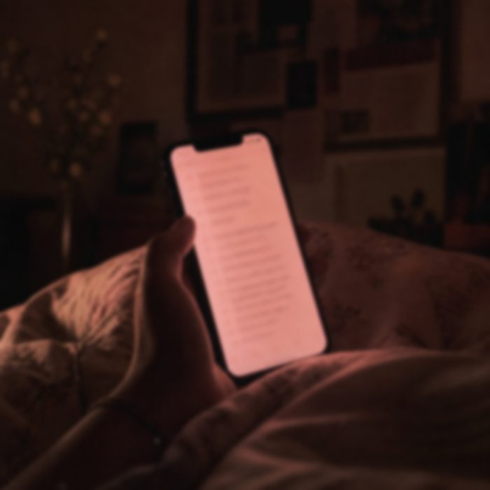

Settembre 2026
Questo, per me, è il capitolo più difficile da scrivere. Vedo come riesco.
E poi è arrivato settembre. Settembre di quest'anno.
Già dopo la Cina avevo cambiato terapia. Lo psicologo che avevo prima non mi aveva aiutato. Pensavo di sì. In realtà, forse, aveva peggiorato le cose.
Ho scelto una donna, sulla cinquantina. Molto matura. Ho voluto provare con una persona più distaccata, più signora, diciamo. Un rapporto più razionale. Niente risate, niente di tutto quello.
la vita.
Questa persona mi ha cambiato completamente la vita. E ci sono ancora dentro, al percorso.
Non mi sento una persona migliore. Non mi sento una persona completamente cambiata. Sarebbe una bugia dirtelo, e di bugie te ne ho già dette.
Ma mi ha acceso tutto. Mi ha fatto capire i miei errori, senza farmi sentire in colpa. Anche se, ovviamente, in colpa mi ci sentivo lo stesso. Mi ha dato una spiegazione alle cose.
E poi, quel settembre, ho visto le tue storie.
Non sapevo che fossi già in Erasmus. Mi ricordavo che ci andavi a marzo. E vedendo quelle storie sono crollato. Completamente.
Ho cercato di resistere. Tantissimo. Tante volte, in estate, ho provato a scriverti. E ho resistito.
Ti ho sentita completamente diversa. Completamente distaccata. Una persona che sta bene. E mi faceva felice saperlo, davvero: sapere che stavi bene.
Ma una persona che mi aveva dimenticato.
Quel giorno, con quegli ultimi messaggi, ho capito che era un addio.
Stavolta mi sono sentito come se fossi stato lasciato io. Ma in realtà sono stato io a lasciare. Di nuovo.
Ed ero lì, in questa frustrazione: no, mi hai lasciato tu. Ma non è vero. Tu semplicemente non sei voluta tornare, dopo che ti avevo lasciata io.
Mi si è spento tutto. Tutto è diventato nero.
So che sei preoccupata. Ma voglio essere sincero con te, fino in fondo.
Sono stato male. Mi sono lasciato andare, e per riprendermi mi sono dato alle cose peggiori. Svapavo moltissimo, con la nicotina al massimo, perché mi annebbiava, mi spegneva tutto. Mangiavo pochissimo, e male. E già da un po' prima ero molto triste.
della mia vita.
La cosa più difficile era che qui venivano i ragazzi a lavorare, e io dovevo far finta di niente. Prendevo la macchina, mi inventavo qualcosa per andarmene via un attimo. E stavo lì, da solo.
Poi ho trovato il mio modo di scriverti. Non a te. Ma ti sto scrivendo.
Sulle note, ogni giorno, segno le cose che mi vengono in mente di te. Le cose che scrivo di te.

Per farti capire cosa scrivo, eccone una. A rileggermi sembro pazzo, ahah.
Giorno 5
Oggi ho scritto tutta la nostra storia
Vorrei mandartela tantissimo ❤️
Sarebbe bello valutare la terapia di coppia
Sarebbe bello provare a fare un periodo insieme
Non hai idea della routine che ho in menteeee
Passeggiata al mattino, colazione insieme, si lavora e tutto, poi cena assieme e scegliamo una serie o mercoledì cinema!!!
Poi weekend esperienzettaaaa. Sai a Milano quante cose ci sarebbero?!?!!!
Ma tu a Milano non ci vuoi venire ;(
Sarebbe bellissimo, nel nostro mini appartamento con le tue ideeee, il tuo tutto. La sera il mio sogno sarebbe dedicarla a te. Sai che roba???? Abbraccetto, film. Io e te.
Magari questa vita solo un periodo eh. Il tempo poi quando cambierà cambieremo posto. Se siamo insieme riusciamo ;/
Ma te non vuoi…. O almeno per colpa mia no. Io faccio la spesa e tu la dieta, che dici?
- giorno 6
- giorno 7
- giorno 8
Non ti nego che ho l'ansia. Che guardo tantissime volte il tuo profilo. Ero diventato completamente ossessionato dalla paura che qualcuno fosse entrato nella tua vita. Perché se qualcuno è entrato nella tua vita, io so che non c'è più speranza.
I primi giorni è stato così. Ma ci ho riflettuto tantissimo, e ne ho parlato con la mia terapeuta. È normale, i primi giorni. Ma è giusto anche che io ti lasci i tuoi spazi.
Forse, per la prima volta, ho sentito davvero di averti persa.
Una sera Davide mi ha portato fuori a cena. “Dai, andiamo al burger, ti offro io.” Davide che mi offre il burger. Lì ho capito che c'era qualcosa di strano.
E infatti quella sera mi ha detto che eri molto preoccupata.
E da lì mi è cambiato tutto. Perché non è giusto. Non è giusto che sia tu a sentirti responsabile di quello che ho fatto io. La responsabilità è mia. Solo mia.
E avevo anche paura che tu tornassi solo per questo. Solo perché avevi paura che stessi male. Neanche questo sarebbe giusto.
So cosa temi. E te lo dico chiaro: non ti lascerò mai quel peso. Mai. Non lo vorrei mai.
Mi sto facendo aiutare. Dalla terapeuta, e da Davide, a cui ho chiesto aiuto. Mi riavvicinerò a mia mamma. Me ne aspettano tante altre, di settimane difficili. Ma ce la farò.
stare bene.e non voglio che tu sia in pensiero per me
Per questo sono anche felice di andare via. Penso che qui tornerò molto poco: solo per vedere la mia famiglia, i miei nonni, e i miei amici al massimo una volta ogni due settimane. Per staccarmi un po' da tutto, e fare un percorso mio. Perché se resto sempre qui, non cambierò mai.
E a me, in realtà, non è mai importato che tu ti trasferissi via, che volessi stare lì per sempre. Perché io, se potessi andarmene via da Caldogno, lo farei subito. Sono convinto che anche il contesto che mi sono creato qui abbia distrutto tutto.
Non ti nego che, nella mia testa, c'è una speranza. Che finiamo i nostri percorsi. Perché anch'io adesso sto ancora male. Non sarei la persona che voglio che tu veda. Neanche esteticamente: in questo momento sono inguardabile.
Tutto questo non è per rincontrarci adesso. Anche perché tu sei in un altro posto.
È una speranza nel futuro. Tu stai facendo il tuo percorso, io il mio. E voglio che li facciamo, tutti e due.
E se un giorno vorremo rincontrarci, magari in un altro posto, non qui. Un posto dove un giorno potremmo anche vivere insieme, se lo vorremo. Il pensiero della convivenza, quello nato a Praga.
Non come due ex fidanzati. Ma ricominciando. Ricominciando davvero: io che ti devo riconquistare. E il primo bacio me lo puoi dare dopo tempo. Quando sarai convinta tu.
Come rifare tutto da capo, ma con una base completamente diversa. Due persone diverse.
sono solo speranze.
Ed è giusto anche che io ti lasci andare. E non voglio che tu sia in pensiero per me. È l'ultima cosa che voglio.
Quando vedrò quella foto che prima o poi, se non ricominceremo, ci sarà, di te con un'altra persona, mi farà molto male. Ma forse è proprio quello che mi serve.
In qualche modo
ricomincerò anch'io.